4.1 EDA Beispiel Vorlesung
library(tidyverse)
library(scales)
# create some data about age and height of people
people <- data.frame(
ID = c(1:30),
age = c(5.0, 7.0, 6.5 ,9.0, 8.0, 5.0, 8.6, 7.5, 9.0, 6.0,
63.5 ,65.7, 57.6, 98.6, 76.5, 78.0, 93.4, 77.5, 256.6, 512.3,
15.5, 18.6, 18.5, 22.8, 28.5, 39.5, 55.9, 50.3, 31.9, 41.3),
height = c(0.85, 0.93, 1.1, 1.25, 1.33, 1.17, 1.32, 0.82, 0.89, 1.13,
1.62, 1.87, 1.67, 1.76, 1.56, 1.71, 1.65, 1.55, 1.87, 1.69,
1.49, 1.68, 1.41, 1.55, 1.84, 1.69, 0.85, 1.65, 1.94, 1.80),
weight = c(45.5, 54.3, 76.5, 60.4, 43.4, 36.4, 50.3, 27.8, 34.7, 47.6,
84.3, 90.4, 76.5, 55.6, 54.3, 83.2, 80.7, 55.6, 87.6, 69.5,
48.0, 55.6, 47.6, 60.5, 54.3, 59.5, 34.5, 55.4, 100.4, 110.3)
)
# build a scatterplot for a first inspection
ggplot(people, aes(x=age, y=height)) +
geom_point() +
scale_y_continuous(limits=c(0.75, 2.0)) +
theme(axis.text=element_text(size=12), axis.title=element_text(size=20,face="bold"))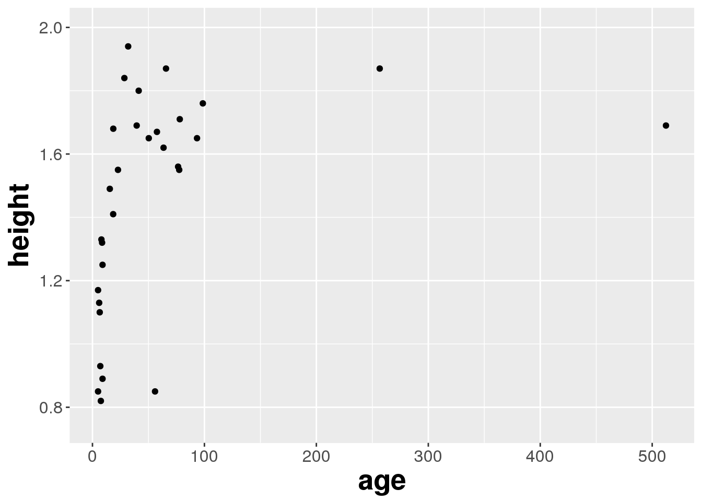
# Go to help page: http://docs.ggplot2.org/current/ -> Search for icon of fit-line
# http://docs.ggplot2.org/current/geom_smooth.html
# build a scatterplot for a first inspection, with regression line
ggplot(people, aes(x=age, y=height)) +
geom_point() +
scale_y_continuous(limits=c(0, 2.0)) +
geom_smooth(method="loess", fill='lightblue', size=0.5, alpha=0.5) +
theme(axis.text=element_text(size=12), axis.title=element_text(size=14,face="bold"))
## Warning: Removed 41 rows containing missing values (geom_smooth).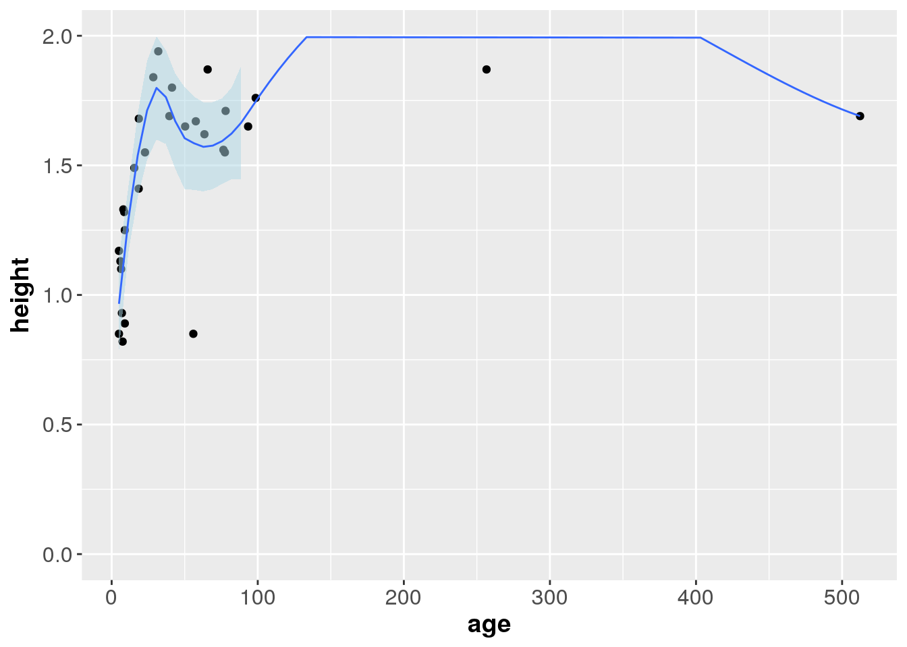
?stem
# stem and leaf plot
stem(people$height)
##
## The decimal point is 1 digit(s) to the left of the |
##
## 8 | 25593
## 10 | 037
## 12 | 523
## 14 | 19556
## 16 | 255789916
## 18 | 04774
stem(people$height, scale=2)
##
## The decimal point is 1 digit(s) to the left of the |
##
## 8 | 2559
## 9 | 3
## 10 |
## 11 | 037
## 12 | 5
## 13 | 23
## 14 | 19
## 15 | 556
## 16 | 2557899
## 17 | 16
## 18 | 0477
## 19 | 4
# explore the two variables with box-whiskerplots
summary(people$age)
## Min. 1st Qu. Median Mean 3rd Qu. Max.
## 5.00 8.70 30.20 59.14 65.15 512.30
boxplot(people$age)
boxplot(people$age)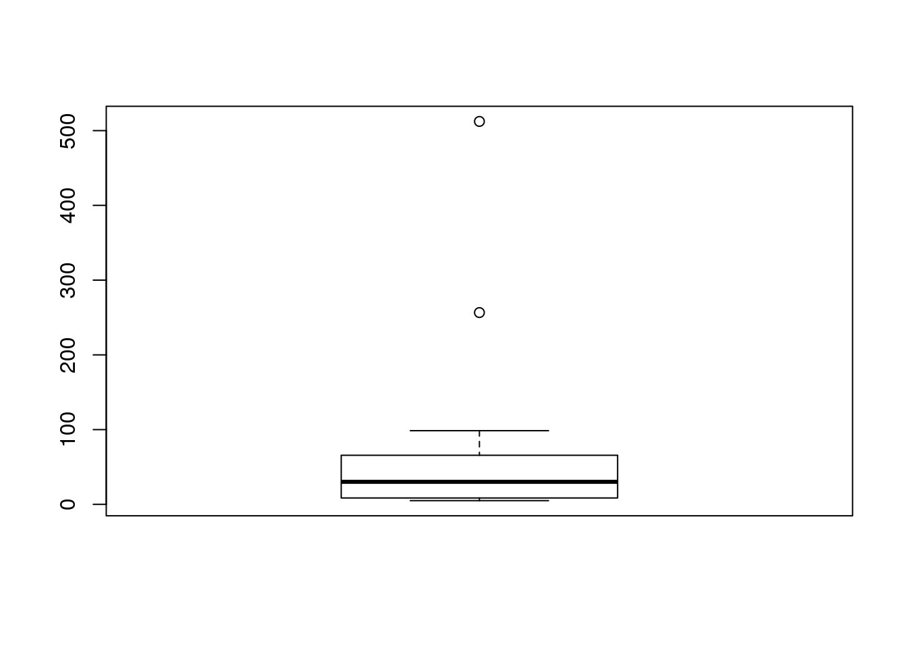
summary(people$height)
## Min. 1st Qu. Median Mean 3rd Qu. Max.
## 0.820 1.190 1.555 1.455 1.690 1.940
boxplot(people$height)
boxplot(people$height)
# explore data with a histgram
ggplot(people, aes(x=age)) +
geom_histogram(stat="bin", fill='green', binwidth=20) +
theme_bw() + labs(x = '\nage', y = 'count\n') +
theme(axis.text=element_text(size=12), axis.title=element_text(size=14,face="bold")) 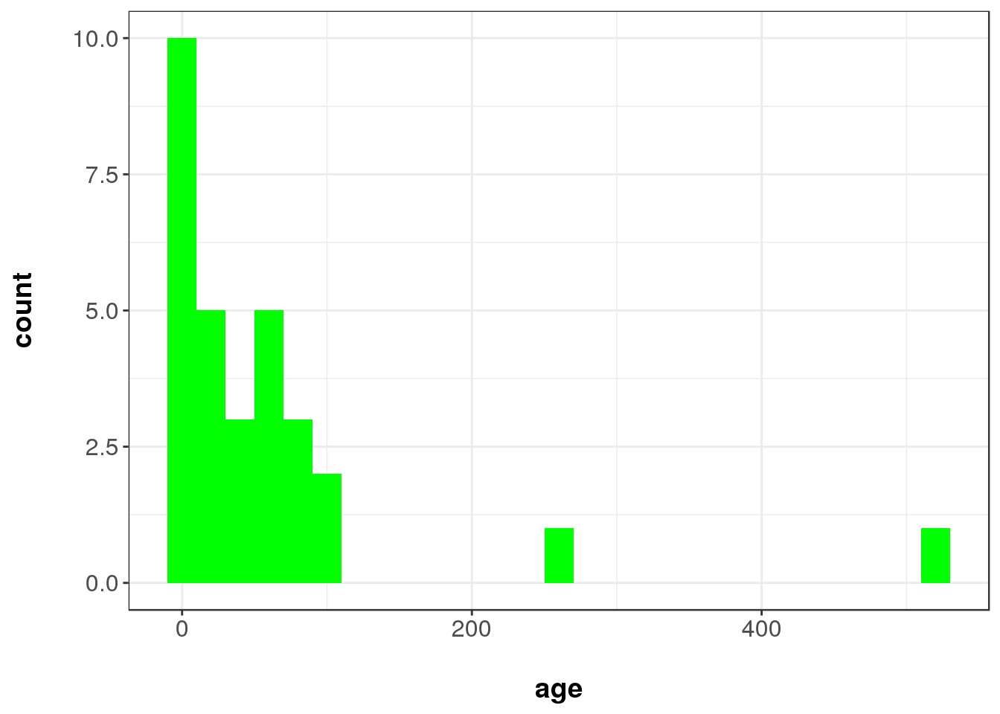
density(x = people$height)
##
## Call:
## density.default(x = people$height)
##
## Data: people$height (30 obs.); Bandwidth 'bw' = 0.1576
##
## x y
## Min. :0.3472 Min. :0.001593
## 1st Qu.:0.8636 1st Qu.:0.102953
## Median :1.3800 Median :0.510601
## Mean :1.3800 Mean :0.483553
## 3rd Qu.:1.8964 3rd Qu.:0.722660
## Max. :2.4128 Max. :1.216350
# re-expression: use log or sqrt axes
#
# Find here guideline about scaling axes
# http://www.cookbook-r.com/Graphs/Axes_(ggplot2)/
# http://docs.ggplot2.org/0.9.3.1/scale_continuous.html
# logarithmic axis: respond to skewness in the data, e.g. log10
ggplot(people, aes(x=age, y=height)) +
geom_point() +
scale_y_continuous(limits=c(0, 2.0)) +
geom_smooth(method="lm", fill='lightblue', size=0.5, alpha=0.5) +
theme(axis.text=element_text(size=12), axis.title=element_text(size=14,face="bold")) +
scale_x_log10()
## Warning: Removed 3 rows containing missing values (geom_smooth).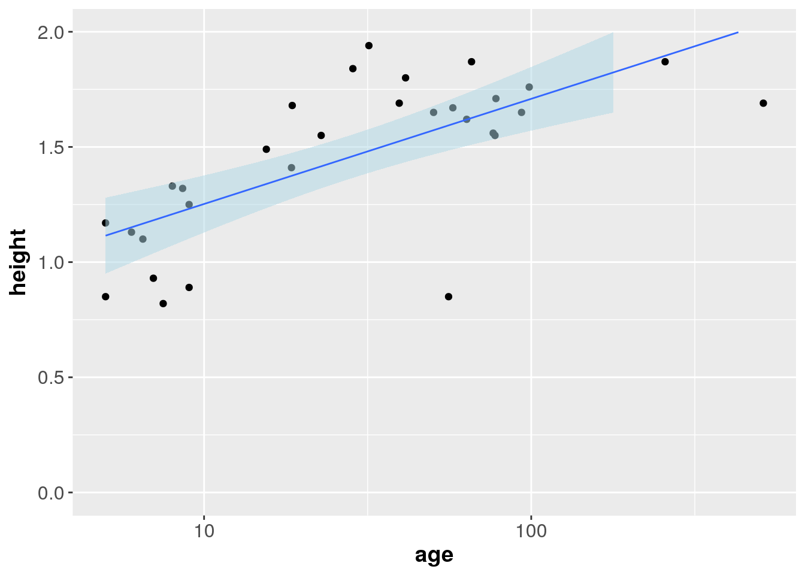
# logarithmic axis: show multiplicative factors, e.g. log2
ggplot(people, aes(x=age, y=height)) +
geom_point() +
scale_y_continuous(limits=c(0, 2.0)) +
geom_smooth(method="lm", fill='lightblue', size=0.5, alpha=0.5) +
theme(axis.text=element_text(size=12), axis.title=element_text(size=14,face="bold")) +
scale_x_continuous(trans = log2_trans(),
breaks = trans_breaks("log2", function(x) 2^x),
labels = trans_format("log2", math_format(2^.x)))
## Warning: Removed 3 rows containing missing values (geom_smooth).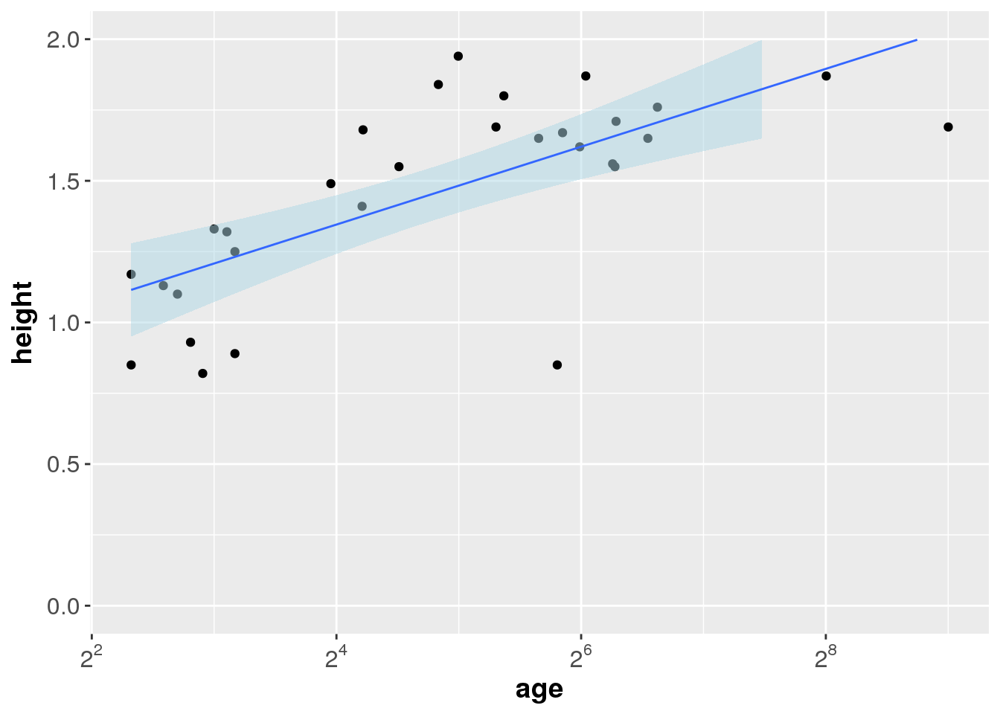
# outliers: Remove very small and very old people
peopleTemp <- subset(people, ID != 27) # Diese Person war zu klein.
peopleClean <- subset(peopleTemp, age < 100) # Fehler in der Erhebung des Alters
# re-explore cleaned data with a histgram
ggplot(peopleClean, aes(x=age)) +
geom_histogram(stat="bin", fill='#6baed6', binwidth=10) +
theme_bw() + labs(x = '\nage', y = 'count\n') +
theme(axis.text=element_text(size=12), axis.title=element_text(size=14,face="bold"))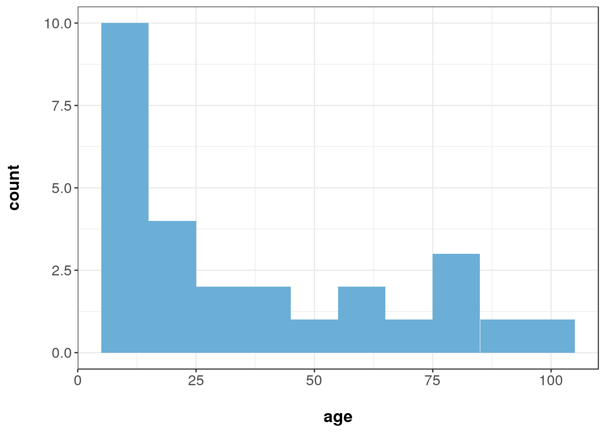
ggplot(peopleClean, aes(x=age, y=height)) +
geom_point() +
scale_y_continuous(limits=c(0, 2.0)) +
geom_smooth(method="lm", fill='lightblue', size=0.5, alpha=0.5) +
theme(axis.text=element_text(size=12), axis.title=element_text(size=14,face="bold"))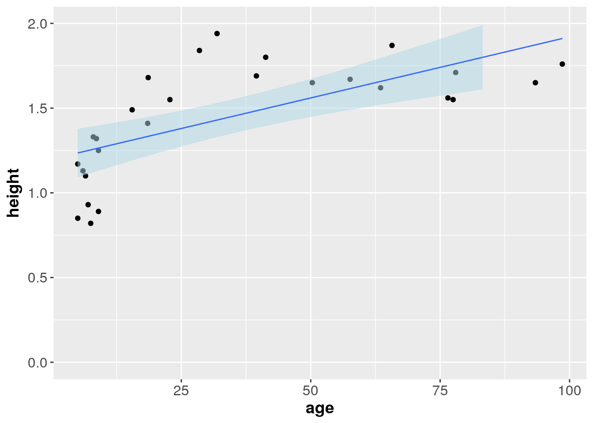
# with custom binwidth
ggplot(peopleClean, aes(x=age)) +
geom_histogram(stat="bin", fill='#6baed6', binwidth=10) +
theme_bw() + labs(x = '\nAlter', y = 'Anzahl\n')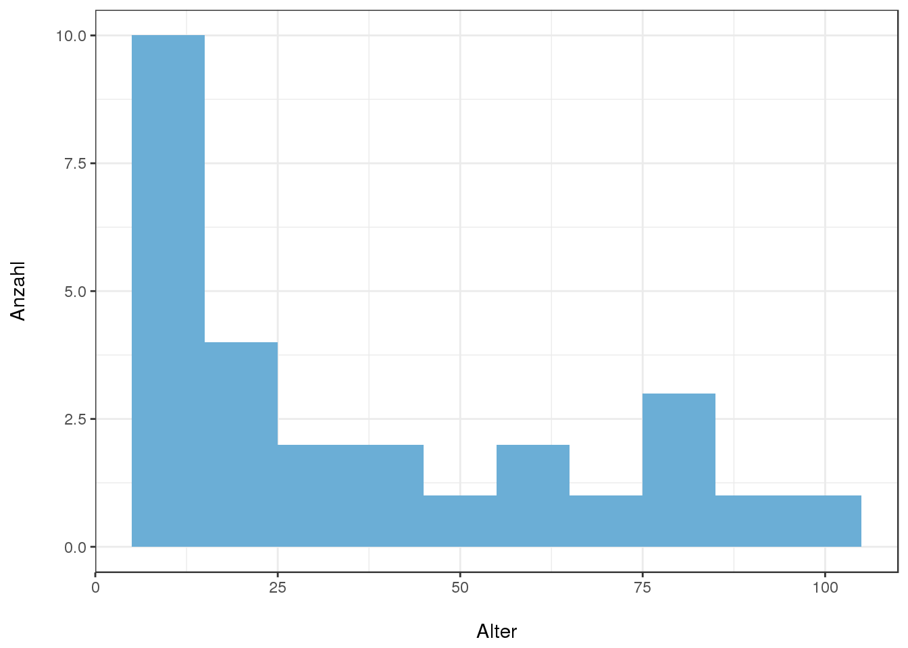
# quadratic axis
ggplot(peopleClean, aes(x=age, y=height)) +
geom_point() + scale_y_continuous(limits=c(0, 2.0)) +
geom_smooth(method="lm", fill='lightblue', size=0.5, alpha=0.5) +
theme(axis.text=element_text(size=12), axis.title=element_text(size=14,face="bold")) +
scale_x_sqrt()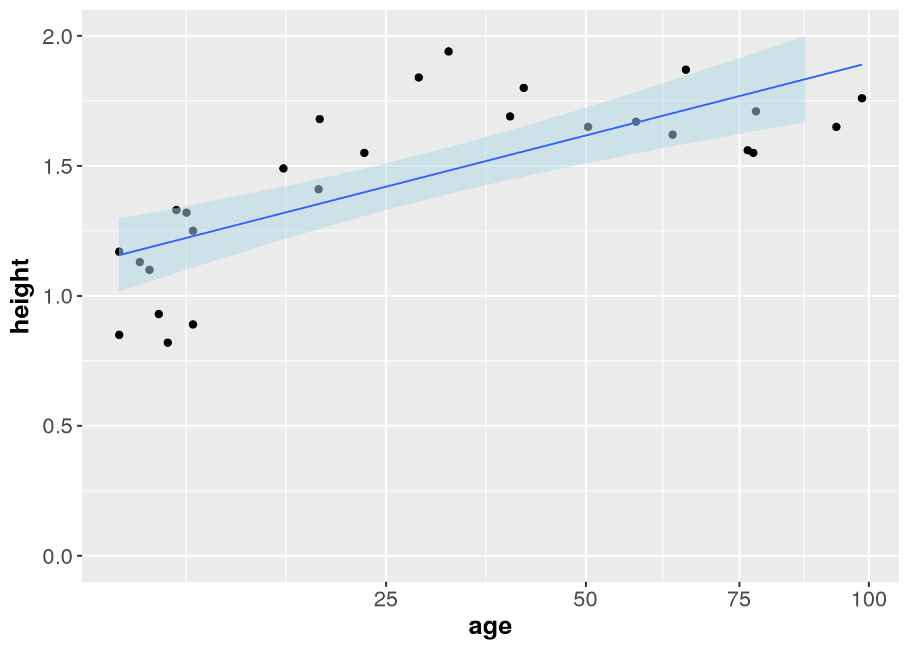
# subset "teenies": No trend
kids <- subset(peopleClean, age < 15)
ggplot(kids, aes(x=age, y=height)) +
geom_point() +
scale_y_continuous(limits=c(0, 2.0)) +
geom_smooth(method="lm", fill='lightblue', size=0.5, alpha=0.5) +
theme(axis.text=element_text(size=12), axis.title=element_text(size=14,face="bold"))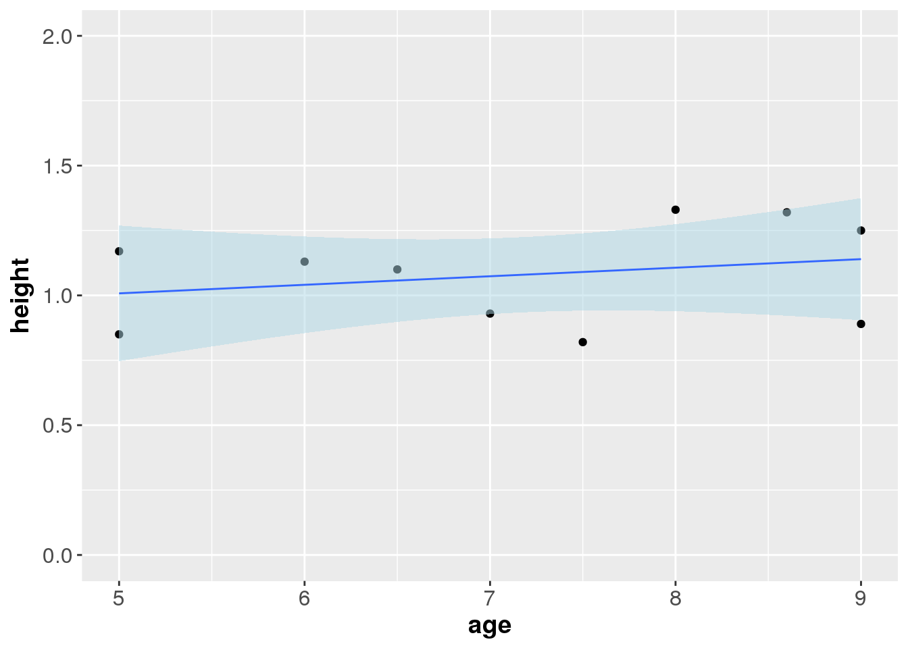
# subset "teenies": No trend
oldies <- subset(peopleClean, age > 55)
ggplot(oldies, aes(x=age, y=height)) +
geom_point() +
scale_y_continuous(limits=c(0, 2.0)) +
geom_smooth(method="lm", fill='lightblue', size=0.5, alpha=0.5) +
theme(axis.text=element_text(size=12), axis.title=element_text(size=14,face="bold"))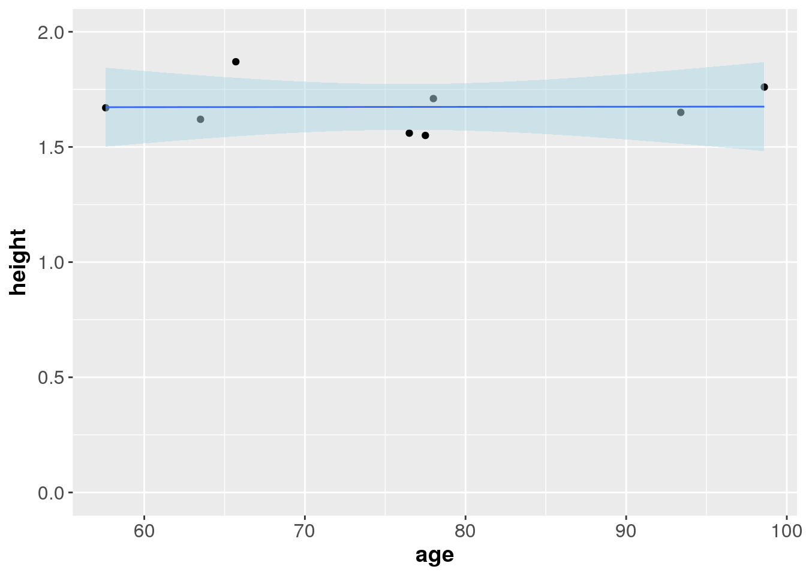
# Onwards towards multidimensional data
# Finally, make a scatterplot matrix
pairs(peopleClean[,2:4], panel=panel.smooth)
pairs(peopleClean[,2:4], panel=panel.smooth)
# Or as a bubble chart
peopleClean$radius <- sqrt( peopleClean$weight/ pi )
symbols(peopleClean$age, peopleClean$height, circles=peopleClean$radius)
symbols(peopleClean$age, peopleClean$height, circles=peopleClean$radius)
Literatur
Wickham, Hadley. 2017a. Scales: Scale Functions for Visualization. https://CRAN.R-project.org/package=scales.
Wickham, Hadley, Romain Francois, Lionel Henry, and Kirill Müller. 2017. Dplyr: A Grammar of Data Manipulation. https://CRAN.R-project.org/package=dplyr.
Henry, Lionel, and Hadley Wickham. 2017. Purrr: Functional Programming Tools. https://CRAN.R-project.org/package=purrr.
Wickham, Hadley, Jim Hester, and Romain Francois. 2017. Readr: Read Rectangular Text Data. https://CRAN.R-project.org/package=readr.
Wickham, Hadley, and Lionel Henry. 2017. Tidyr: Easily Tidy Data with ’Spread()’ and ’Gather()’ Functions. https://CRAN.R-project.org/package=tidyr.
Müller, Kirill, and Hadley Wickham. 2017. Tibble: Simple Data Frames. https://CRAN.R-project.org/package=tibble.
Wickham, Hadley, and Winston Chang. 2016. Ggplot2: Create Elegant Data Visualisations Using the Grammar of Graphics. https://CRAN.R-project.org/package=ggplot2.
Wickham, Hadley. 2017c. Tidyverse: Easily Install and Load ’Tidyverse’ Packages. https://CRAN.R-project.org/package=tidyverse.